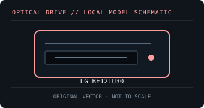

[ OPTICAL DRIVES // IDENTIFIED EXTERNAL MODEL ]
LG BE12LU30
Earlier external 12× Blu-ray Disc rewriter with both USB 2.0 and eSATA host interfaces, plus an AC power adapter.

IDENTIFICATION: Match the exact label and suffix to manufacturer documentation. Ratings are maximums under supported-media conditions, not guaranteed sustained speeds.
Model-specific specifications
| Catalog subcategory | External Blu-ray drives |
|---|---|
| Exact model / SKU | LG BE12LU30 |
| BD formats and read rates | BD-ROM, BD-R and dual-layer BD-R, BD-RE and dual-layer BD-RE; standard Blu-ray data/video media. Read: BD-ROM / BD-R up to 10×; BD-RE up to 8×. |
| BD write formats and rates | BD-R / BD-R DL up to 12×; BD-RE up to 2× (disc-specific maximum). |
| DVD formats and read rates | DVD-ROM, DVD±R, DVD±R DL, DVD±RW and DVD-RAM. Read: DVD-ROM / DVD±R up to 16×; DVD±RW up to 12×; DVD-RAM up to 12×. |
| DVD write formats and rates | DVD±R up to 16×; DVD±R DL 8×; DVD+RW 8×; DVD-RW 6×; DVD-RAM up to 12×. |
| CD formats and read rates | CD-ROM, CD-R and CD-RW. Read: CD-ROM / CD-R up to 48×; CD-RW up to 40×. |
| CD write formats and rates | CD-R up to 48×; CD-RW up to 24×. |
| USB interface and power | USB 2.0 and eSATA host interfaces; external AC adapter required. eSATA throughput and the specific host port affect high-speed disc operation. |
| Host compatibility and software | LG lists Windows XP/Vista-era compatibility; no current-OS guarantee is implied. Bundled CyberLink software is legacy Windows software. Modern OS use and Blu-ray playback depend on available drivers, applications, codecs and protected-video support. |
| Model caveat | This model is not a BDXL recorder. Its 12× BD-R ceiling is media-dependent and the older eSATA/USB implementation should be distinguished from later USB 3.x products. |
Host, media and preservation notes
- Separate drive-level disc support from playback application, region policy, codec licensing and any protected-video/HDCP requirements.
- Use supported media and a stable data/power connection; firmware, media quality, layer, recording mode and USB bandwidth affect actual speed.
- For an archival image, log drive model/firmware, host OS, software, media type, verification result and checksums.
Manufacturer and manual sources
- LG — BE12LU30 product support and manualsManufacturer model support and documentation locator.
- LG BE12LU30 owner manual (manual archive)Model-specific manual record for supported media, installation and host interfaces.
Published X-speed ratings are maximum format-specific rates. Actual operation depends on supported media, software, host throughput and operating conditions.